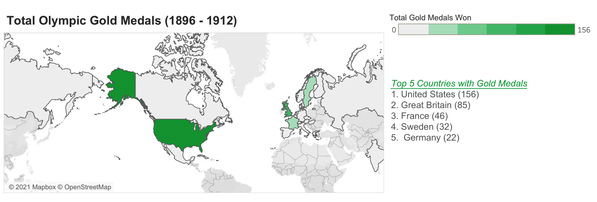
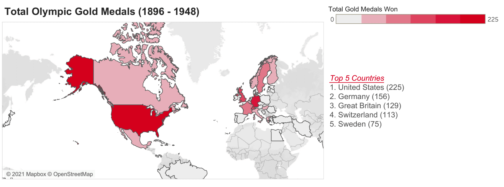

→ View interactive visualization
The first modern Olympic Games was hosted in Athens in 1896, and since then it has become a globally televised sporting event that brings people around the world to share common values and allow them to learn about the host city. While the achievements of each athlete and country should be celebrated, there are many factors that determine the circumstances under which they are able to train. This data visualization aims to highlight these circumstances and place these country's success in winning medals, by comparing their Human Development Index (as of 2020) to their total number of medals won.
The visualization highlights three time periods: 1912, 1948, and 2016 due to global events and geopolitics. 1912 marked the last Olympic Games before World War 1 broke out, the 1948 London games was the first game to be held after the end of World War 2, and the 2016 Rio games was the most recent game due to the global COVID-19 pandemic. World War 1 and World War 2 marked significant time periods in redrawing and reshaping the global map. While the maps used below are drawn with the current country boundaries, adjustments have been attempted to be made to account for these geopolitcal changes.
*Note: This visualization does not include data from Tokyo 2021*
01. Pre WW1
02. WW1 - WW2
03. Post WW2
(Data source: Kaggle)
Although it is clear that the United States has the most gold medals, the following rankings depends heavily on geopolitics. However, these visualizations have shown the dominance of Western countries in Olympic gold medal winnings and ability to participate from the first Olympics, which does not display a strong correlation with their HDI ranking.
Note: Over the last 2 decades, there have been many geopolitical changes, such as the alteration of country names, borders, and territory due to military campaigns and wars, such as World War I and II. Although 3 visualizations were created to accomodate for the changes in Olympic teams, present day country borders are used due to lack of data.
→ View interactive visualization
→ Spring 2021 (2 Weeks)
→ DSGN 337: Information Design & Visualization
→ Instructor: Mahir Yavuz